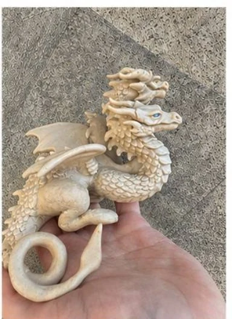

Выберите основу, взгляд и особые детали. Мастерская превратит ваш замысел в единственного в своём роде Жителя.

Создан вручнуюЕдинственный экземпляр
Хроника будущего Жителя
Перламутровый страж
Под заказ
Истоки
Рождён среди холодных скал, где лунный свет остаётся на снегу до самого утра.
Характер
Спокойный, наблюдательный и преданный.
Предназначение
Он хранит тишину зимних дорог и приходит к тем, кому нужен надёжный спутник.
Предварительная стоимостьпосле согласованияСрок и стоимость зависят от размера и сложности деталей
Это не серийный конструктор: выбранный образ станет отправной точкой. Вера вручную создаст Жителя с собственными особенностями, а детали заказа будут подтверждены перед началом работы.